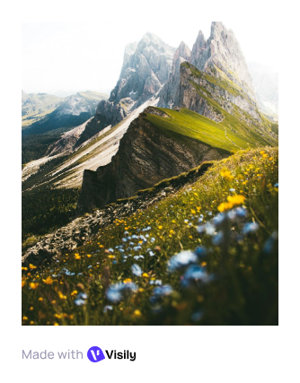

Обо мне
Добро пожаловать! Я веб-разработчик с 5-летним опытом в создании интерактивных интерфейсов. На этом блоге я делюсь своими знаниями, проектами и идеями о том, как технология меняет способ общения людей. Здесь вы найдёте туториалы, кейсы из реальной практики и вдохновляющие истории.

Моя карьера
Текущая должность
Старший веб-разработчик, ООО "DigitalStudio" (2022 — по настоящее время) Руководство командой из 4 разработчиков, разработка архитектуры фронтенда, менторство младших специалистов, внедрение новых технологий в рабочий процесс.
Опыт работы:
Веб-разработчик, ООО "CreativeAgency" (2019 — 2022)
Создание корпоративных сайтов и веб-приложений на React и Vue.js, оптимизация производительности, работа с клиентами и сбор требований.
Фронтенд-разработчик, Стартап "TechVenture" (2018 — 2019)
Разработка пользовательского интерфейса для платформы e-learning, работа с REST API и веб-стандартами.
Интернет-стажёр, Веб-студия "WebMasters" (2017 — 2018)
Создание корпоративных сайтов и веб-приложений на React и Vue.js, оптимизация производительности, работа с клиентами и сбор требований.
Образование:
Государственный Технический Университет, 2013 — 2017
Бакалавриат по специальности "Информатика и вычислительная техника"
Выпускная работа: "Оптимизация загрузки веб-страниц на мобильных устройствах"
Курсы и сертификации:
- Advanced React Development — Coursera (2023)
- UX/UI Design Fundamentals — Skillbox (2021)
- Web Performance Optimization — Frontend Masters (2022)
- Google Analytics Certification (2020)
Навыки:
- Программирование: JavaScript, TypeScript, React, Vue.js, HTML5, CSS3, Node.js
- Инструменты: Git, Webpack, Docker, Figma, VS Code
- Методологии: Agile, Scrum, Test-Driven Development
Достижения:
- Разработал платформу для управления проектами, которой пользуются более 500 компаний
- Снизил время загрузки сайта на 60% благодаря оптимизации и внедрению современных стандартов
- Провёл более 20 воркшопов и мастер-классов для начинающих разработчиков
- Организовал две конференции "Web Technologies Conference" в своем городе
Последние статьи
Как создать адаптивный дизайн за 30 минут
Опубликовано: 15 декабря 2024В этой статье я расскажу о ключевых принципах создания мобильных интерфейсов, которые одинаково хорошо выглядят на всех устройствах. Вы узнаете о медиа-запросах, гибких сетках и практических примерах кода, которые можно использовать прямо сейчас.
Как создать адаптивный дизайн за 30 минут
Опубликовано: 15 декабря 2024В этой статье я расскажу о ключевых принципах создания мобильных интерфейсов, которые одинаково хорошо выглядят на всех устройствах. Вы узнаете о медиа-запросах, гибких сетках и практических примерах кода, которые можно использовать прямо сейчас.
Как создать адаптивный дизайн за 30 минут
Опубликовано: 15 декабря 2024В этой статье я расскажу о ключевых принципах создания мобильных интерфейсов, которые одинаково хорошо выглядят на всех устройствах. Вы узнаете о медиа-запросах, гибких сетках и практических примерах кода, которые можно использовать прямо сейчас.